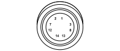

F010 LEFT HEADLAMP (FRONT)
- Path
- Electrical equipment > 3 CONNECTORS > F EXTERIOR LIGHTS > F010 LEFT HEADLAMP > F010 LEFT HEADLAMP (FRONT)
- Kind
- connector pinout (pin -> wire colour -> other end)
- Applies to
- all engines; all production periods
- Interactive page
- https://sloeber94.github.io/elrnDB-fDct/en/#/244002982
Applies to: all engines; all production periods

Wiring | Colour |
|---|---|
- |
Pin | Cable | Destination | |||
|---|---|---|---|---|---|
Sec.. | Colour | Node | Connect. | Pin | |
1 | 2,5 | N (black) | 6 | ||
6 | 1 | HN (grey with black stripe) | 25 | ||
7 | 0,5 | NZ (black with violet stripe) | X | 1 | |
7 | |||||
D02 | |||||
8 | 0,5 | VB (green with white stripe) | X | 8 | |
D01 | |||||
9 | 0,5 | HB (grey with white stripe) | X | 24 | |
9 | |||||
D03 | |||||
10 | 0,75 | SB (pink with white stripe) | B04 | ||
11 | 0,75 | GN (yellow with black stripe) | A02 | ||
12 | 1 | VN (green with black stripe) | 4 | ||